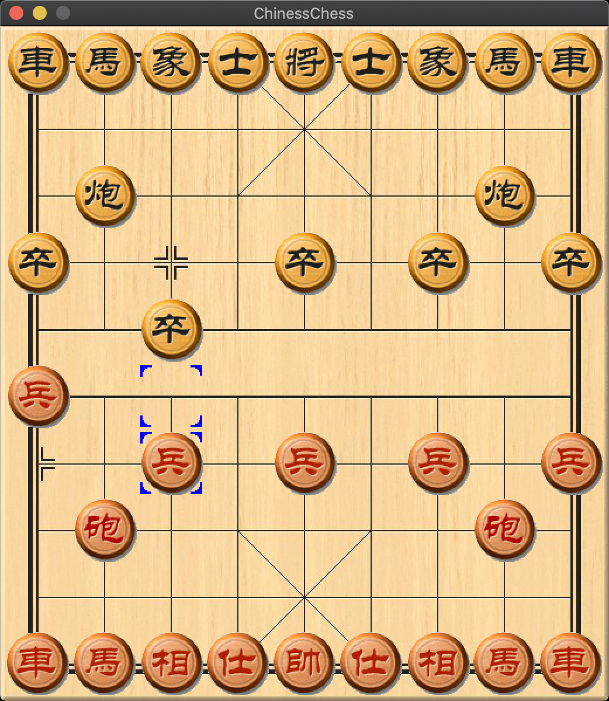
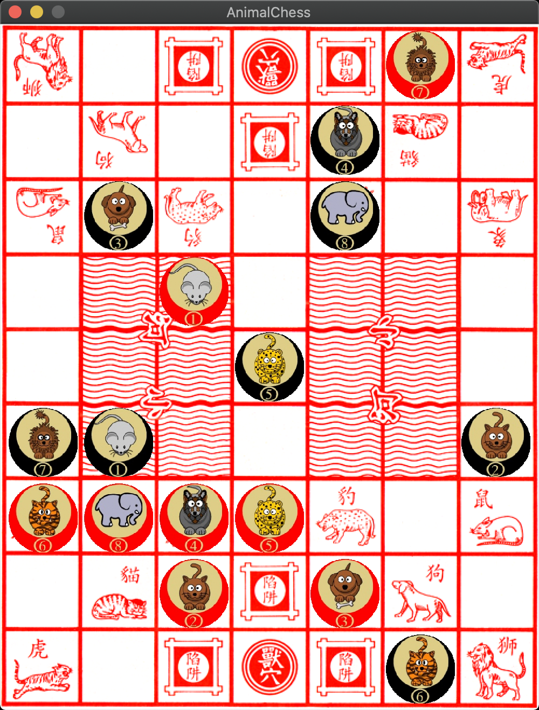

项目地址：
好久没更新blog了，主要技术文章都是在公司内部写，后面看看有没有机会同步到blog上。
现在利用业余时间写了棋类游戏，起初是因为部门最近举行编程大赛，主题是写一个中国象棋AI，这期间偷偷参加了比赛，参考了国际、中国象棋的相关算法，最后利用alpha beta剪枝算法，取得了总决赛季军名次，这个名次对我们来说还可以，因为八强中有七强是直接拿开源代码稍微改改就比赛了的，我们全靠自己写，拿到这个名次还算可以。
还是要吐槽这次比赛的，毕竟海思部门是第一次举办软件大赛，选了这种网上代码一大堆的题目实在没意思。还是无线的软件大赛有意思，题目比较偏门，比如18年那次比赛是写一个RTS对抗游戏的ai，网上没有现成的代码可利用，全靠手写，就这样拿了冠军。
编码是我的爱好，业余时间想写点什么来消遣一下，正好最近这个象棋游戏给了我启发，不如直接也从头写一个玩玩，既然写就需要考虑用什么语言写了，C/C++是我的强项，写了对我来说没任何编码技巧上的提升，就用Rust来试试手，看看编码体验 如何吧，于是有了下面的项目：
把GUI写完后，发现在写下去没意思，因为在比赛的时候已经用C++把AI写过一编，于是就先搁置了。

后来想起了小学爱玩的斗兽棋，心血来潮，规则比较简单，分支因子也小，相对象棋来说简单多了，然后就收集素材，很快把象棋的GUI改成了斗兽棋的，并添加了AI。虽然目前的AI比较弱智，但是我目前已经很难赢了😂。

模块划分 接下来讲讲实现部分。目前项目由四部分实现：
1 2 3 4 5 src ├── ai.rs # AI实现 ├── chess.rs # 棋子的定义 ├── game.rs # 核心框架、图像渲染 └── main.rs # 程序主入口
首先需要GUI来交互，我考虑了SDL框架，因为上手简单，很快仿着rust-sdl2例子写了个gui出来：https://docs.rs/sdl2/0.34.0/sdl2/#getting-started 。
类型别名 和C的typedef，C++的using类似，Rust也支持别名：
1 2 3 pub type POS u8 ;pub type MOVE u16 ;pub type ScoreType i32 ;
异常处理 来看看异常处理，Rust有个语法糖?可以很简单的处理异常：
1 2 3 4 5 6 7 8 9 10 11 12 13 14 15 16 fn main Result <(), String > { let sdl_ctx = sdl2::init()?; let video_sys = sdl_ctx.video()?; let windows = video_sys.window("AnimalChess" , WINDOW_WIDTH, WINDOW_HEIGHT) .position_centered() .allow_highdpi() .build().expect("could not initialize video subsystem" ); let mut game = Game::new(windows, sdl_ctx.event_pump()?); game.run()?; Ok (()) }
其中sdl2::init()?表达了init可能失败导致panic，我也不处理这个异常，直接通过?扔出去。
结构体定义 然后把GUI部分从main提取出来，封装到Game类中：
1 2 3 4 5 6 7 8 9 10 11 12 13 14 15 pub struct Game pub chesses: [[ChessId; COL_NUM]; ROW_NUM], chesses_textures: Vec <Texture>, pub role: Role, board: Texture, canvas: WindowCanvas, event_pump: EventPump, selected_chess: Option <POS>, selected_frame: Texture, movable_pos: Vec <MOVE>, pub compture_turn: bool , pub compture_mv: Option <MOVE>, ctx: VecDeque<Context>, pub history_table: HisTblType, }
if-let表达式，结构化绑定其中棋子、棋盘的素材存到了chesses_textures, board成员中，并用chesses存放了棋盘内容。selected_chess存的是当前用户点击的棋子，movable_pos存放的是当前选中棋子可走的格子，当用户点击棋盘的时候，可能是选中棋子，也可能是移动棋子，如下实现：
1 2 3 4 5 6 7 8 9 10 11 12 13 14 15 16 17 fn process_click mut self , pos: (i32 , i32 )) { if let Some (dst) = self .get_click_rect(pos) { if get_chess_role(self .chesses[dst.0 ][dst.1 ]) != self .role { if let Some (_) = self .movable_pos.iter().find(|&&mv| { return get_dst_pos(mv) == to_pos(&dst) }) { let src = self .selected_chess.unwrap(); self .move_chess(to_move(&(get_pos(src), dst))); } self .selected_chess = None ; } else { println! ("selected_chess: {:?}" , to_pos(&dst)); self .selected_chess = Some (to_pos(&dst)); } self .movable_pos.clear(); } }
这时候看到结构绑定的好处了，get_click_rect返回一个Option<(usize, usize)>值，将用户的鼠标位置转换成棋盘的行列位置。通过if let语句来获得Some里面的值并取出，接着进行判断。若用户没有选中棋子，这可能是移动棋子，这时候通过查找movable_pos来判断是否移动。
再来看一个例子：
1 2 3 4 5 6 7 8 9 10 11 12 13 14 for event in self .event_pump.poll_iter() { match event { Event::KeyDown { keycode: Some (keycode), .. } => { match keycode { Keycode::Escape => { break ; } Keycode::U => { undo = true ; } _ => {} } } Event::MouseButtonDown {x, y, ..} => { click_pos = (x, y); } _ => {} } }
结构化绑定，可以分别取出结构体Event::KeyDown, Event::MouseButtonDown对象里的成员变量：keycode, x, y。
通过结构化绑定，写起来很爽。目前C++ 17也有了结构化绑定，但是没有Rust那么强大。对于Option这个表达可有的概念，C++17也有了std::optional。
match表达式 Rust还有一个强大的语句，那就是match，前面例子已经介绍过了，写起来是这样的。判断棋子是否进入了对方的兽穴：
1 2 3 4 5 6 7 pub fn check_in_den self , pos: POS) -> bool { let pos_ = get_pos(pos); match (get_chess_role(self .chesses[pos_.0 ][pos_.1 ]), pos) { (RED, BLACK_DEN) | (BLACK, RED_DEN) => return true , _ => { return false } } }
其中(RED, BLACK_DEN) | (BLACK, RED_DEN) => return true语义很清晰，如果红色棋子进了黑色兽穴，或者黑色棋子进了红色兽穴，则为真；其他情况为假。如果换成if-else语句，写出来就很丑了。
还有check_movable里的判断吃子代码也很简洁：
1 2 3 4 5 match (src_chess_type, dst_chess_type) { (RAT, ELEPHANT) => ! Self::check_in_water(src), (ELEPHANT, RAT) => false , (s, d) => s <= d || self .check_in_traps(dst) }
老鼠若不在水里则能够吃大象：(RAT, ELEPHANT) => ! Self::check_in_water(src)
大象在任何情况下都不能吃老鼠：(ELEPHANT, RAT) => false
其他场景按照大子吃小子规则，若对方在陷阱里，无视这个规则：(s, d) => s <= d || self.check_in_traps(dst)
再来看看一个例子，就是根据fen串来初始化棋盘。fen串是用字符串记录了棋子在棋盘中的位置，例如初始化的fen串是这样的：l5t/1d3c1/r1p1w1e/7/7/7/E1W1P1R/1C3D1/T5L，小写表示黑方，大写表示红方。一个字母表示一个棋子，如果没有棋子，则用数字表示出相邻连续的空位数。斗兽棋共有九行，每行都用一个字符串表示，行间使用正斜杠分割。
解析fen串的代码是这样的，很清爽：
1 2 3 4 5 6 7 8 9 10 11 12 13 14 15 16 17 18 19 20 21 22 23 24 25 26 27 28 29 30 31 32 33 34 35 36 37 38 fn load_fen mut self , fen: &str ) { let fen_u8 = fen.as_bytes(); let mut fen_idx = 0 ; let get_role = |c: u8 | -> Role { if (c as char ).is_lowercase() { BLACK } else { RED } }; let mut pos = 0usize ; while fen_idx < fen_u8.len() { let mut chess_id = EMPTY; match fen_u8[fen_idx] { c @ b'e' | c @ b'E' => { chess_id = get_chess_id(get_role(c), ELEPHANT); } c @ b'l' | c @ b'L' => { chess_id = get_chess_id(get_role(c), LION); } c @ b't' | c @ b'T' => { chess_id = get_chess_id(get_role(c), TIGER); } c @ b'p' | c @ b'P' => { chess_id = get_chess_id(get_role(c), PANTHER); } c @ b'w' | c @ b'W' => { chess_id = get_chess_id(get_role(c), WOLF); } c @ b'd' | c @ b'D' => { chess_id = get_chess_id(get_role(c), DOG); } c @ b'c' | c @ b'C' => { chess_id = get_chess_id(get_role(c), CAT); } c @ b'r' | c @ b'R' => { chess_id = get_chess_id(get_role(c), RAT); } n @ b'1' ..= b'9' => { pos += (n - b'0' ) as usize ; } b'/' => { } b' ' => { break ; } _ => { unreachable! () } } if chess_id != EMPTY { self .chesses[pos / COL_NUM][pos % COL_NUM] = chess_id; pos += 1 ; } fen_idx += 1 ; } fen_idx += 1 ; self .role = if fen_u8[fen_idx] == b'w' { RED } else { BLACK }; }
c @ b'e' | c @ b'E' => { chess_id = get_chess_id(get_role(c), ELEPHANT); }这句表达了若为e或者E，则通过颜色来得到对应的棋子id。可惜Rust目前还不支持这种写法：c @ (b'e' | b'E')，目前or-patterns syntax is experimental，暂时这么写了。
lambda表达式 1 2 3 4 let get_role = |c: u8 | -> Role { if (c as char ).is_lowercase() { BLACK } else { RED } };
用lambda表达式封装get_role来通过字符大小写判断红黑色，避免重复代码，因为这个函数只有内部使用，没必要封装成一个单独函数。
迭代器 Rust的迭代器也很爽，目前C++ 20的std::views也简化了这种操作，看看例子。
来看看基本走法的生成，也就是只能走十字，每次只能走一格，老鼠可以进河。
1 2 3 4 5 6 7 8 9 10 11 12 13 14 15 fn generate_basic_steps self , src: POS, to_water: bool ) -> Vec <MOVE> { const DX: [i32 ; 4 ] = [1 , 0 , -1 , 0 ]; const DY: [i32 ; 4 ] = [0 , 1 , 0 , -1 ]; let src_ = get_pos(src); let (x, y) = (src_.0 as i32 , src_.1 as i32 ); (0 ..4 ).into_iter().map(|idx| { to_move(&(get_pos(src), ((x + DX[idx]) as usize , (y + DY[idx]) as usize ))) }).filter(|&mv| { let (_, dst) = get_move(mv); dst.0 < ROW_NUM && dst.1 < COL_NUM && self .check_movable(src, get_dst_pos(mv)) && (! Self::check_in_water(to_pos(&dst)) || to_water) }).collect() }
(0..4).into_iter()生成[0,4)的range，然后基于range做计算。
通过idx得到四个方向的坐标，生成(src, dst)移动向量。
1 2 3 .map(|idx| { to_move(&(get_pos(src), ((x + DX[idx]) as usize , (y + DY[idx]) as usize ))) })
过滤四个方向，只有在范围内、可以吃掉对方、能过河的结果保留下来：
1 2 3 4 5 6 .filter(|&mv| { let (_, dst) = get_move(mv); dst.0 < ROW_NUM && dst.1 < COL_NUM && self .check_movable(src, get_dst_pos(mv)) && (! Self::check_in_water(to_pos(&dst)) || to_water) })
接下来是狮子、老虎的走法生成：
1 2 3 4 5 6 7 8 9 10 11 12 13 14 15 16 17 18 19 20 21 22 23 fn generate_tl_steps self , src: POS) -> Vec <MOVE> { let mut basic_steps = self .generate_basic_steps(src, false ); let src_ = get_pos(src); if Self::check_at_bank(src) { if (src_.0 + 2 ) % 4 == 0 { basic_steps.push(to_move(&(src_, ((src_.0 + 4 ) % 8 , src_.1 )))); } else { if src_.1 % 6 == 0 { basic_steps.push(to_move(&(src_, (src_.0 , 3 )))); } else { basic_steps.push(to_move(&(src_, (src_.0 , 0 )))); basic_steps.push(to_move(&(src_, (src_.0 , 6 )))); } } basic_steps = basic_steps.into_iter().filter(|&mv| { let (src, dst) = (get_src_pos(mv), get_dst_pos(mv)); self .check_movable(src, dst) && !self .check_rat(src, dst) }).collect() } basic_steps }
首先得到基本走法，然后生成跳河走法。最后的filter过滤无效的移动，例如狮子老虎跳河的时候中间不能有老鼠，对岸的棋子比自己小时。
1 2 3 4 basic_steps.into_iter().filter(|&mv| { let (src, dst) = (get_src_pos(mv), get_dst_pos(mv)); self .check_movable(src, dst) && !self .check_rat(src, dst) }).collect()
通过迭代器的map可以做类型转换，从而传参给指定类型的接口。例如fn draw_frame(&mut self, tgt_pos: &Vec<POS>)接口，需要的参数类型为Vec<POS>，可实际参数是Vec<MOVE>，通过如下转换：
1 2 3 4 5 6 7 8 9 fn process_selected_chess mut self ) -> Result <(), String > { if let Some (pos) = self .selected_chess { self .draw_frame(&vec! [pos])?; self .movable_pos = self .generate_steps(pos); self .draw_frame(&self .movable_pos.iter().map(|&mv| { get_dst_pos(mv) }).collect())?; } Ok (()) }
这个接口绘制选中的棋子、以及可移动的格子的框框，self.movable_pos.iter().map(|&mv| { get_dst_pos(mv) }).collect()进行类型转换，只保留dst的坐标。
Borrow Checker Rust通过借用检查来避免写出不安全的代码：
第一，任何借用必须位于比拥有者更小的作用域
第二，对于同一个资源（resource）的借用，即同一个作用域下，要么只有一个对资源 A 的可变引用（&mut T），要么有N个不可变引用（&T），但不能同时存在可变和不可变的引用
所以如下代码：
1 2 3 4 5 6 7 8 9 10 11 12 13 14 15 16 17 let mut undo = false ;for event in self .event_pump.poll_iter() { match event { Event::KeyDown { keycode: Some (keycode), .. } => { match keycode { Keycode::U => { undo = true ; } _ => {} } } _ => {} } } if undo { self .undo_move(); if self .compture_turn { self .undo_move(); } }
不能直接写成：
1 2 3 4 5 6 7 8 9 10 11 12 13 14 15 for event in self .event_pump.poll_iter() { match event { Event::KeyDown { keycode: Some (keycode), .. } => { match keycode { Keycode::U => { self .undo_move(); if self .compture_turn { self .undo_move(); } } _ => {} } } _ => {} } }
因为self.event_pump.poll_iter()拿到了&mut self，而self.undo_move()也拿到了&mut self，这在Rust是绝对不允许的。
1 2 3 4 5 6 7 8 9 10 11 12 13 14 15 16 17 18 19 20 21 22 23 error[E0499]: cannot borrow `*self` as mutable more than once at a time --> src/game.rs:440:33 | 433 | for event in self.event_pump.poll_iter() { | --------------------------- | | | first mutable borrow occurs here | first borrow later used here ... 440 | self.undo_move(); | ^^^^ second mutable borrow occurs here error[E0499]: cannot borrow `*self` as mutable more than once at a time --> src/game.rs:441:57 | 433 | for event in self.event_pump.poll_iter() { | --------------------------- | | | first mutable borrow occurs here | first borrow later used here ... 441 | if self.compture_turn { self.undo_move(); } | ^^^^ second mutable borrow occurs here
吐槽 开发过程还是很爽的，但是也有一些小问题，记录在这。
cargo publish发布包的时候，没考虑assets的情况，所以cargo install后图片资源没法定位，目前没什么好的方案，所以最好通过下载源代码cargo run的形式来运行。
相对C++来说标准库不够完善，很多基本接口都没有，例如std::collections::LinkedList连排序接口都没有，导致只能使用Vec这种简单的数据类型。估计是鼓励用第三方库吧，毕竟Rust对依赖处理的很好。
标准库里的容器没有统一的Trait，导致写不出泛型参数，比如C++会通过begin()/end()接口来统一类型，C++ 20有Concepts来约束类型，而Rust的链表迭代器Trait都是链表自有的。
C++代码是这样：
1 2 3 4 5 6 template <T>void process (T& container) for (auto iter = container.begin(); iter != container.end(); iter += 1 ) { } }
Rust写不出来：
1 2 3 4 5 6 fn process where T: ?? { for data in container { } }
关于内存安全性，例如开发过程中数组越界访问了，会导致panic然后挂掉，这应该是最好结果。如果是C语言的话，数组越界访问是不会直接挂掉，这就留下了隐患让别有用心的人利用了。
后续 接下来要做的是继续优化AI，可以考虑将AI模块分离出来，抽象Trait接口，实现类似于C++的pImpl模式，也就是策略模式吧。也不知道好不好做，毕竟这两个模块存在相互依赖的关系。
总的来说用Rust写起来很舒服，结合了很多语言的优点，从而有足够的表达力，期待今后发展会越来越好吧。
通过这个项目也认识到了封装的重要性，哪怕再小的数据结构，封装也有利于维护与演进。例如最初的坐标是(usize, usize)，移动向量是((usize, usize), (usize, usize))，通过类型别名POS和MOVE，后来分别压缩成u8和u16，重构后也没出现过问题。